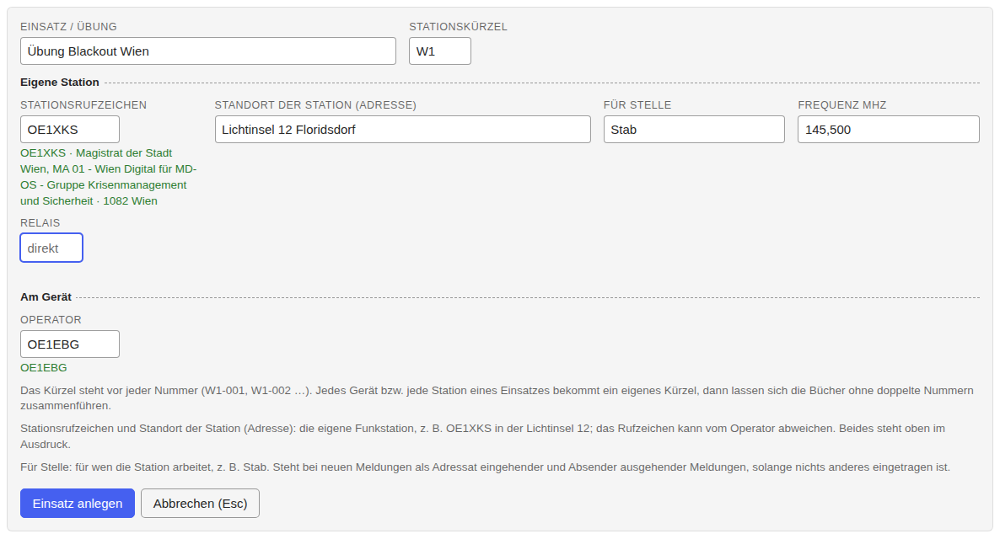
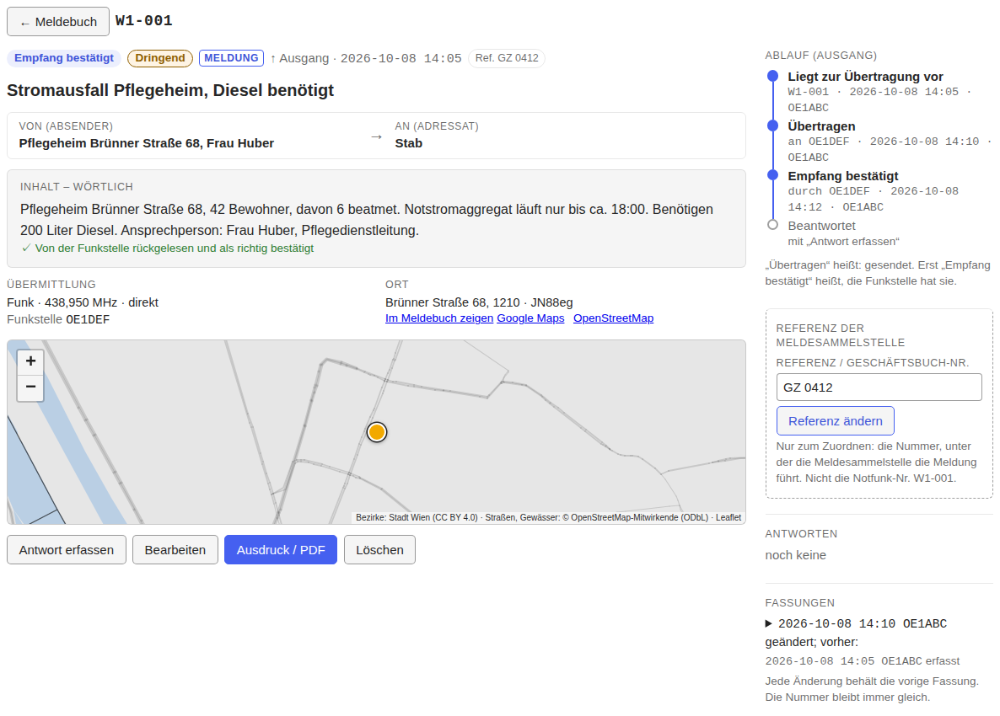
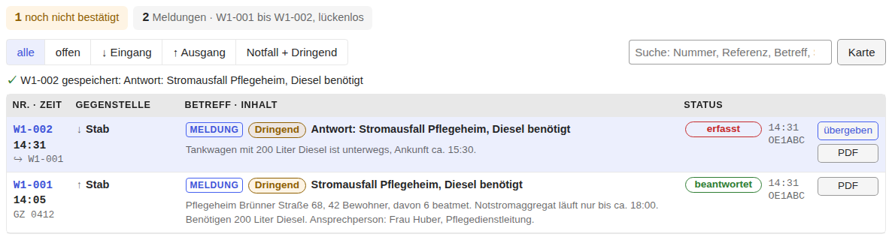

Notfunk logbook: introduction and tutorial
Open the Notfunk logbook All tools · Deutsche Anleitung (full manual) · Empty form (PDF) · Source code
The Notfunk logbook (Notfunk-Meldebuch) is a logbook for emergency radio in Vienna, Austria: take down messages, number them without gaps, hand them over, transmit them and print them. It runs entirely in the browser, works offline, and keeps all data on the device. The tool itself is in German; this page explains the idea and walks through an example. The complete reference of every field and button is the German manual.
Draft
The message format has not yet been agreed with the Notfunkreferat Wien and the Meldesammelstelle. Fields, labels and urgency levels may change. Intended for exercises.
Introduction: the path of an emergency message
The situation
In a large-scale communication outage, such as a blackout, the usual ways fail: calls to emergency numbers by phone or mobile no longer get through. For this case the City of Vienna sets up Lichtinseln ("islands of light"), places run by religious communities where citizens can get help and information. They are equipped with radios and, where possible, staffed by radio amateurs of the Notfunkreferat. A message from the neighbourhood can thus reach the city's crisis management even when nothing else works (sources).
The path of a message
Someone comes to the Lichtinsel with an emergency. Their message is taken down, relayed by radio, received by the crisis staff and decided on; the reply travels the same path back.
Forward:
- Take down. A person describes the emergency. The radio amateur at the Lichtinsel writes down the exact wording. For safety they read it back and the person confirms it is right (recommended, not mandatory).
- Transmit. The message goes over the local information network to the responsible K-Vorsorgestandort (a district support site). Reading back by the receiver is recommended, but not mandatory. If the Lichtinsel is not checked in to a local network, it goes over the Informationsnetz Wien.
- Relay. The K-Vorsorgestandort passes it to the Einsatzleitstelle (ELS, the operations centre of the crisis management), normally over authorities' radio (BOS-Funk), with the tactical amateur radio network as backup. There the amateur station (OE1XKS while the ELS works at its usual place; otherwise another callsign) takes it down.
- Hand over. The radio amateur in the ELS hands the message to the Meldesammelstelle (message collection point). It belongs to the Kriseneinsatzstab (crisis staff), not to amateur radio. This is where the radio amateurs' job ends: what the staff does with the message is their decision. The Meldesammelstelle enters it in its registry and gives a reference; the radio amateur records it in the logbook.
Back:
- The staff decides and replies through the Meldesammelstelle, for example "Tanker with 200 litres of diesel is on its way, arrival about 15:30."
- The Meldesammelstelle gives the reply to the radio amateur in the ELS, who takes it down word for word, transmits it to the K-Vorsorgestandort.
- The K-Vorsorgestandort passes it on to the Lichtinsel.
- The radio amateur at the Lichtinsel takes it down and tells the person who reported the emergency: "Help is on its way."
Two kinds of feedback differ:
- The takeover ("message received, reference GZ 0412") only confirms the message is with the Meldesammelstelle. It comes quickly and says nothing about help.
- The reply ("help is on its way") comes when the staff has decided. It is a message of its own that refers to the original.
Which stations a message actually passes depends on the situation; the picture shows the regular path of the Richtlinie Notfunk Teil 2 – Wien (sources).
What radio amateurs do, and what they don't
In this chain radio amateurs are messengers, nothing more. The guideline says: amateur stations should not create messages themselves, only transmit them.
Radio amateurs …
- take down the exact wording as given,
- read back where possible, so nothing arrives wrong,
- transmit the message and pass on the reply word for word,
- record handover and receipt.
Radio amateurs do not …
- interpret, add to, shorten or "improve" the content,
- pass on guesses or unverified information,
- arrange or promise help themselves.
Every message that is transmitted belongs in the logbook, as it actually went: with wording, times, handovers and replies. The message flow should be traceable without gaps, as far as possible. If there is no time right now, write on paper and enter the message afterwards ("Nachtrag vom Papier").
The logbook helps: the wording is stored unchanged, numbers are gapless, every version is kept, and it shows who handed over what and when.
Where the logbook fits in
Every station keeps a logbook and every message gets a number. A message's progress is its status:
| Station | Direction | Status in the logbook |
|---|---|---|
| Lichtinsel, message to the staff | ↑ Ausgang (outgoing) | zur Übertragung → übertragen → Empfang bestätigt → beantwortet |
| Lichtinsel, reply from the staff | ↓ Eingang (incoming) | erfasst → übergeben (to the person) → übernommen |
| Station in the ELS, message from the Lichtinsel | ↓ Eingang | erfasst → übergeben (to the Meldesammelstelle) → übernommen (with the reference) → beantwortet |
| Station in the ELS, reply from the staff | ↑ Ausgang | zur Übertragung → übertragen → Empfang bestätigt |
The Notfunk number (W1-007) belongs to the station, the reference
to the staff's own registry (Geschäftsbuch). The logbook keeps both apart
so the two lists can be matched.
The logbook is built to run reliably offline. Even so, be prepared for paper-only operation in case the device or the power fails: print the paper forms in advance and keep a stack ready (link below). Enter the messages in the logbook afterwards. Download the empty form (PDF) (German; the same form the tool prints). Personal data must be deleted when no longer needed; the logbook never deletes by itself, so you manage operations and backups yourself.
Tutorial: a message from the Lichtinsel to the staff
The example: exercise "Blackout Wien". You are a radio amateur at the Lichtinsel Floridsdorf. Ms Huber, head of nursing at a care home at Brünner Straße 68, arrives on foot: the emergency generator only runs until about 18:00, and 6 ventilated residents depend on the power. The home needs diesel for the generator. Callsigns and names are made up.
1. Prepare
- Open the logbook once with internet and install it as an app (browser menu: "Install app" / "Add to Home Screen"); afterwards it works offline ("offline bereit ✓" top right). For laptops without internet there is a single offline HTML file to carry on a USB stick.
-
"+ Neuer Einsatz" (new operation): operation name, station prefix W1, your station callsign, location, operator, "Für Stelle" Stab and the frequency of the local network. Then "Einsatz anlegen".

The prefix stands before every number. If the Lichtinsel has two devices, each gets its own prefix (W1, W2) so numbers never collide.
2. Take down the message
You transmit the message, so the direction is Ausgang (↑).
- Richtung: Ausgang. Übermittlung: Funk. Funkstelle: the callsign of the station you transmit to (OE1DEF, the K-Vorsorgestandort).
- Von: "Pflegeheim Brünner Straße 68, Frau Huber"; An: "Stab". The sender is the person, not you.
- Dringlichkeit: "Dringend" (to be transmitted before routine); "Notfall" is for immediate danger to life. When in doubt, ask the control station.
- Betreff (subject) and Ort (location; the address search suggests matches offline).
- Inhalt – wörtlich: the exact wording.
-
Rücklesen (recommended, not mandatory): read the message back to the person; when they say "right", tick the box, otherwise leave it empty.

-
Save with ⇧+Enter. Only now the number is assigned: W1-001.
3. Transmit and record it
- In the message's row click "übertragen" and enter who you transmitted to (time empty = now).
- When the other station has confirmed receipt (and read back, if you did), enter "Empfang bestätigt".
-
When the Meldesammelstelle reports a reference ("GZ 0412"), enter it.

4. Receive the reply
- Open W1-001 and choose "Antwort erfassen": the form opens as Eingang with sender and addressee swapped and the reference set.
- Enter the exact wording of the reply, read it back, save (W1-002). W1-001 is now beantwortet.
-
Tell Ms Huber, and record that you passed it on.

5. At the end
Download a backup (JSON) (the status top right counts messages not yet backed up), and print messages or the whole logbook as PDF. Details are in the German manual.
Sources
The introduction rests on these documents; they apply, not this page.
- Richtlinie Notfunk, Teil 2 – Wien, edition 1.0 of 2024-10-20, Notfunkreferat of the Landesverband Wien of the ÖVSV: Richtlinie-NF-Wien-1_0.pdf (network structure, message handling, operating technique, frequencies, documentation, data protection).
- ÖVSV Landesverband Wien (OE1): oe1.oevsv.at.
- ÖVSV wiki, category Notfunk: wiki.oevsv.at/wiki/Kategorie:NOTFUNK.
- SKKM-Richtlinie für das Führen im Katastropheneinsatz (Federal Ministry of the Interior): PDF.
- ÖBFV Info E-31 (2022): PDF.
- Lichtinseln of the City of Vienna: ORF Wien, Erzdiözese Wien (background).
- Legal basis named by the guideline: Datenschutzgesetz § 10 in the Rechtsinformationssystem; W-KKG, LGBl. 60/2003.